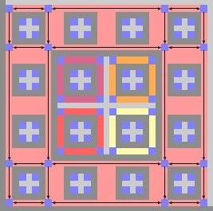

|

|
Silvère Gangloff
2019-. Post-doctoral researcher at University of Wisconsin-Madison, Department of psychiatry
2018-2019. Post-doctoral researcher at ENS Lyon, Department of Computer science (ANR project CoCoGro).
2015-2018. Ph.D. in Mathematics: Algorithmic complexity
of growth-type invariants of multidimensional SFT under
dynamical constraints, under supervision of
Mathieu Sablik.
2011-2015. ENS Paris: Studies in mathematics,
biology, and history ; Master of mathematics;
Agrégation de mathématiques.
More details:
Curiculum vitae. Mail: first.last@gmx.com
| |